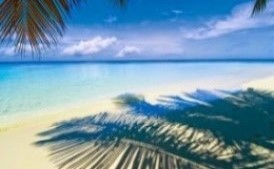

Welcome to the "Maravilha d'nos Ilha"website.
Cape Verde, officially the Republic of Cape Verde,
is an island country located in an archipelago formed by ten volcanic islands in the central region of the Atlantic Ocean.
About 570 kilometers off the coast of West Africa, the islands cover a total area of just over 4,000 square kilometres.
10 Volcanic Islands
The country is known for its Portuguese-African Creole culture,
its traditional warm music and its many beaches.
Culture: Morna is an Intangible Heritage of Humanity
Cape Verdean culture is very rich. With different modalities and areas, language, music, crafts, literature,
and religion are just a few elements that are part not only of the culture but also of the traditions
that exist in this small country in the middle of the Atlantic Ocean.

Sea Beaches
Cape Verde is a holiday destination,
known for its idyllic beaches, with golden sand and blue-green sea.